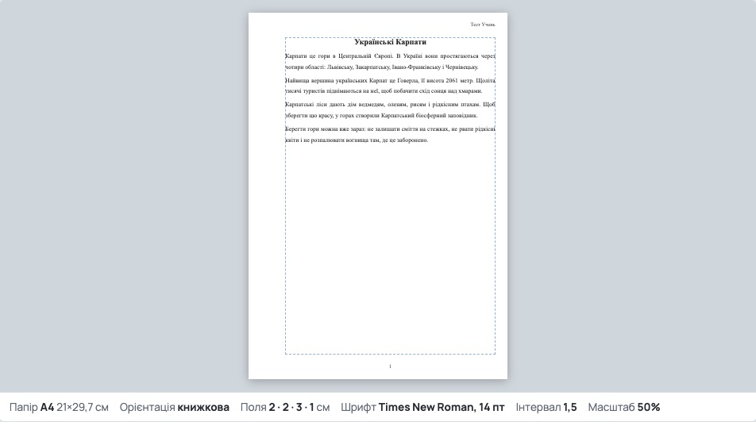

Будинок у перспективі
Лінійна перспектива з двома точками сходу. За 8 кроків учень проводить горизонт, ставить точки сходу, будує стіни, дах, вікна й двері, прибирає допоміжні лінії і розфарбовує малюнок.
Мої перші ігри для уроків: діти вчаться крок за кроком, отримують бали за кожну правильну дію, а наприкінці уроку троє найкращих отримують колекційні картки. Грати можна просто в браузері або всім класом, з рейтингом на проєкторі.
Лінійна перспектива з двома точками сходу. За 8 кроків учень проводить горизонт, ставить точки сходу, будує стіни, дах, вікна й двері, прибирає допоміжні лінії і розфарбовує малюнок.

Дорога в ялинковий ліс з однією точкою сходу. Окрім перспективи, учні розкладають шари картини від заднього плану до переднього, як у меню «Упорядкувати» Google Малюнків.

Учень готує реферат до друку: обирає розмір аркуша й орієнтацію, налаштовує поля, шрифт та інтервал, оформлює заголовок, додає колонтитули з номером сторінки, а потім переглядає і друкує.

Один спільний блоковий світ на весь клас. Кожна дитина обирає звірятко і грає з планшета. Збирачі разом наповнюють скриню кульками, а Заважайки будують їм перешкоди. П'ять рівнів, 3D-світ на проєкторі, команди перемішуються щорівня.
Натисніть «Грати» біля гри. Нічого не потрібно встановлювати. Ім'я, селфі й прогрес зберігаються лише в цьому браузері та нікуди не надсилаються. Так можна повторити тему вдома або пройти урок самостійно.
Учительський ноутбук стає сервером класу. Учні бачать спільний рейтинг, а вчитель отримує на проєкторі таблицю, таймер уроку й нагородження трьох найкращих.
klas запустіть потрібну гру: python3 landscape-server.py (або house-, format-, kulky-server.py). Потрібен лише Python 3, інтернет не обов'язковий.http://192.168.1.10:8000.http://localhost:8000/board.Кулькосвіт працює лише в цьому режимі, бо всі діти грають в одному світі.
Ігри поширюються за ліцензією Creative Commons «Зазначення авторства — Некомерційна — Поширення на тих самих умовах» 4.0 Міжнародна (CC BY-NC-SA 4.0). Повний текст лежить у файлі LICENSE, а пояснення простими словами у LICENSING.md. Щодо комерційної ліцензії пишіть через GitHub.